先来上张 git 命令总结图（记住它 git 命令不是事）：
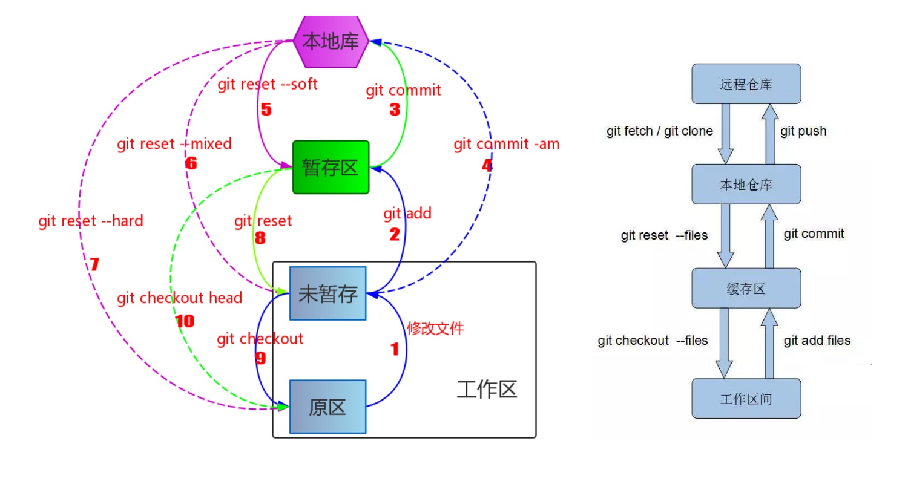
回顾 git 分区和工作流
Git 的区域分为 工作区、暂存区、本地仓库区。
工作区（work Tree）：当前的工作区域。
暂存区（Stage or Index）：暂存区域，和 git stash 命令暂存的地方不一样。使用 git add xx，就可以将 xx 添加近 Stage 里面。
本地仓库（Repository）：我们在为项目添加本地库之后，会在工作区生成一个隐藏目录 .git，此目录即为当前工作区的本地版本库。同时提交的历史，使用 git commit 提交后的结果也在这里。
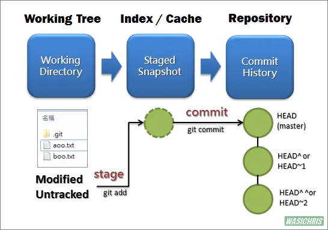
以下简单敘述一下把文件存入 Repository 流程：
刚开始 working tree 、 index 与 repository（HEAD）里面的內容都是一致的；
当 git 管理的文件夹里面的内容出现改变后，此時 working tree 的內容就会跟 index 及 repository（HEAD） 的不一致，而 git 知道是哪些文件 （Tracked File）被改动过，直接将文件状态设置为 modified （Unstaged files）。
当我们执行 git add 后，会将这些改变的文件內容加入 index 中 （Staged files），所以此时 working tree 跟 index 的內容是一致的，但他们与 repository（HEAD） 內容不一致。
接着执行 git commit 後，將 git 索引中所有改变的文件內容提交至 repository 中，建立出新的 commit 节点 HEAD 后， working tree、index 与 repository（HEAD） 区域的内容 又会保持一致。
git reset 三种模式
git reset --hard HEAD^
reset --hard：会在重置 HEAD 和 branch1 的同时，重置 stage 区 和工作目录里的内容。 当你在 reset 后面加了 --hard 参数时，你的 stage 区和工作目录里的内容会被完全重置为和 HEAD 的新位置相同的内容。换句话说，就是你的没有 commit 的修改会被全部擦掉。
例：在上次 commit 之后又对文件做了一些改动：修改后的 ganmes.txt 文件 add 到 stage 区，修改后的 shopping list.txt 保留在工作目录，执行 git reset --hard HEAD 后，HEAD 和当前 branch 切到最近的一次（当前） commit 的同时，你工作目录里的新改动和已经 add 到 stage 区的新改动也一起全都消失了。
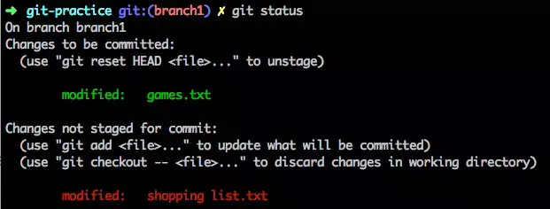
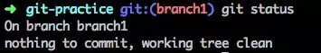
注：执行 git reset --hard HEAD^，回退到上一次的 commit。（可输入 git log 或者 git log --oneline 进行版本查询）
git reset --soft HEAD^
reset --soft：会在重置 HEAD 和 branch 时，保留工作目录和暂存区中的内容，并把重置 HEAD 所带来的新的差异放进暂存区。
例：修改后的 ganmes.txt 文件 add 到 stage 区，修改后的 shopping list.txt 保留在工作目录；
假设此时当前 commit 的改动内容是新增了 laughters.txt 文件；
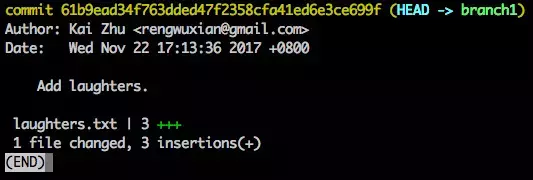
执行 git reset --soft HEAD^，HEAD 和它所指向的 branch 被移动到 HEAD^ 的同时，原先 HEAD 处 commit 的改动（也就是那个 laughters.txt 文件）也会被放进暂存区。
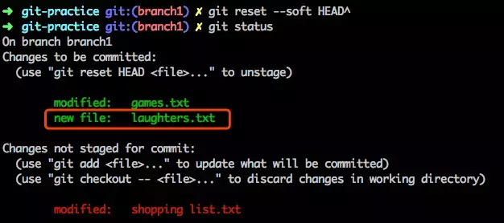
注：--soft 和 --hard 的区别：--hard 会清空工作目录和暂存区的改动,而 --soft 则会保留工作目录的内容，并把因为保留工作目录内容所带来的新的文件差异放进暂存区。
git reset --mixed HEAD^
reset --mixed（可不加，--mixed 为默认参数）：它的行为是：保留工作目录，并且清空暂存区。 也就是说，工作目录的修改、暂存区的内容以及由 reset 所导致的新的文件差异，都会被放进工作目录。简而言之，就是把所有差异都混合（mixed）放在工作目录中。
例：情况同上，修改了 games.txt 和 shopping list.txt，并把 games.txt 放进了暂存区；
当前 commit 的改动内容是新增了 laughters.txt 文件；
执行 git reset HEAD^ 或者 git reset --mixed HEAD^，工作目录的内容和 --soft 一样会被保留。区别在于，它会把暂存区清空，并把原节点和 reset 节点的差异的文件放在工作目录。总而言之就是，工作目录、暂存区、reset 的差异文件，都会被放进工作目录，同时当前 commit（最近的一次 commit）的内容被标记为 Untracked files。
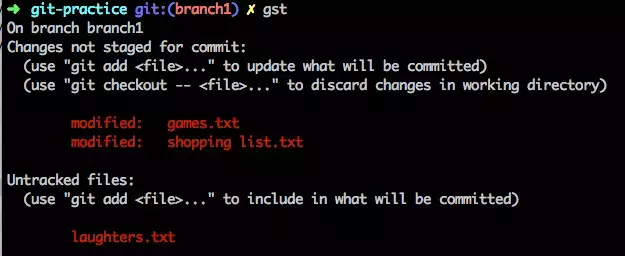
reset 三种模式区别和使用场景：
区别
--hard：重置位置的同时，将 working tree 工作区、 index 暂存区及 repository 都重置成目标 reset 节点的內容，所以效果看起来等同于清空暂存区和工作区。
--soft：重置位置的同时，保留 working tree 工作区和 index 暂存区的内容，只让 repository 中的内容和 reset 目标节点保持一致。因此原节点和 reset 节点之间的差异变更集会放入 index 暂存区中（Staged files）。所以效果看起来就是工作区、暂存区内容不变，原节点和 reset 节点之间的差异放到暂存区中。
--mixed（默认）：重置位置的同时，只保留 working tree 工作区的內容，但会将 index 暂存区 和 repository 中的內容更改和 reset 目标节点一致，因此原节点和 reset 节点之间的差异变更集会放入 working tree 工作区中。所以效果看起来就是index 暂存区清空，原节点和 reset 节点之间的所有差异都会放到工作目录中。
使用场景
--hard：
- 放弃目前本地的所有更改，去掉所有暂存区和工作区的文件，执行
git reset --hard HEAD。 - 抛弃目标节点后的所有
commit（觉得commit有问题）。
--soft：
- 合并多个
commit节点，让commit演进线图清晰。
--mixed（默认）：
- 同样可以合并多个
commit节点，让commit演进线图清晰。 - 移除所有 index 暂存区中的文件，执行
git reset HEAD，将这些文件变更为Untracked files。（还原add错的文件） - 回撤错误的
commit文件。
git 其他命令
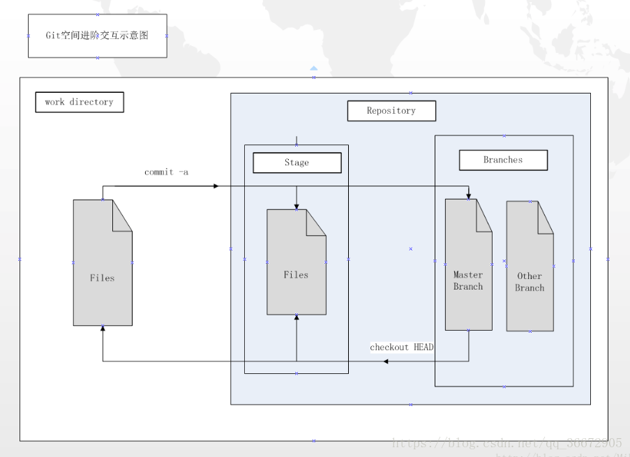
git commit -a
等同于连续执行 git add 与 git commit，即先把文件从工作目录复制到暂存区，然后再从暂存区复制到仓库中。
git checkout -- <file>
修改了工作区，没 add 到暂存区，执行 git checkout -- <file> 命令来撤销。简单的说就是暂存区覆盖工作区（把修改的内容还原，未暂存区回退到文件初始状态）。
例：现在 readme.txt 里面内容是 first day.，已经 add 到暂存区了，修改 readme.txt，内容改成 second day.，然后执行 git checkout -- readme.txt 命令,你会发现 readme.txt 的内容又变成 first day.。
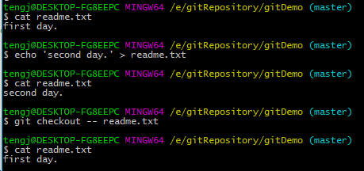
git checkout HEAD <file>
git checkout HEAD <file> 命令是 git checkout -- <file> 和 git reset HEAD 的合成体，直接用 HEAD 覆盖工作区，暂存区。（暂存区回退到文件初始状态）
例：工作区、暂存区以及 HEAD 中文件内容都是 first day.，修改 readme.txt 内容为 second day.，add . 到暂存区，执行 git checkout HEAD readme.txt 命令，再查看 readme.txt 内容的时候你会发现变成了 first day.。
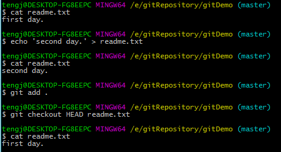
git reset --hard commit_id
执行完 git reset --hard HEAD^ 后悔了，想恢复回去，可执行 git reset --hard commit_id。（这里的 commit_id 是版本号，忘记了刚才最后一个的版本号，可以通过 git reflog 来查看）
git diff
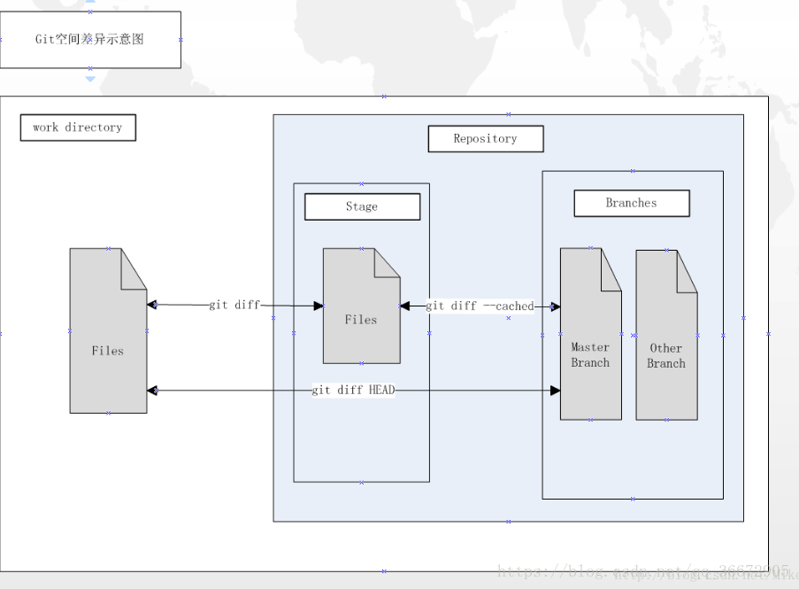
-
git diff：查看尚未暂存的文件更新了哪些部分，即当前状态下工作区和暂存区之间的差异。 -
git diff –cached：查看已暂存文件和上次提交时的快照之间的差异，即当前状态下暂存区和分支内的差异。 -
git diff HEAD：查看未暂存文件与最新提交文件快照的区别，即当前状态下工作区和分支内的差异。
git stash
-
git stash save "save message": 执行存储时，添加备注方便查找，只用git stash也要可以的，但查找时不方便识别。 -
git stash list：查看stash了哪些存储。 -
git stash pop：恢复之前缓存的stash到工作区并删除。 -
git stash clear：删除所有缓存的stash。
例：当你的开发进行到一半，代码还不想进行提交，然后需要拉去远程代码，直接 git pull 会拒绝覆盖当前的修改，产生冲突。这个时候我们可以这样解决：
1 | git stash //先保存修改的代码（注：只有被 add 的才能被保存） |
例：工作流被打断，需要先做紧急需求（emergency fix）。这时候：
1 | git stash //保存开发到一半的代码 |
例：提交特定文件，如果对多个文件做了修改，但只想提交几个文件（或者想先暂时保存几个修改），测试其他文件的执行结果。可以通过 git stash save --keep-index 来进行：
1 | git add --first part //只将第一部分加入管理 the index |
git rm -r --cached .
在使用 git 的时候我们有时候需要忽略一些文件或者文件夹。我们一般在仓库的根目录创建 .gitignore 文件；在提交之前，修改 .gitignore 文件，添加需要忽略的文件。然后再做 add commit push 等。但是有时在使用过称中，需要对 .gitignore 文件进行再次的修改。这时我们需要清除一下缓存 cache，才能是 .gitignore 生效。
操作如下：
1 | git rm -r --cached . #清除缓存 |
git log -- <file>
git log 可以让我们查看提交 commit history，默认会输出 commit hash，author，date，commit message。
1 | $ git log |
简单总结 git log 的几个参数。
--oneline
这个命令简化 git log 的默认的输出，仅仅输出 commit hash 前7个字符串和 commit message。
1 | $ git log --oneline |
-p <file>
-p 控制输出每个 commit 具体修改的内容，输出的形式以 diff 的形式给出。
1 | $ git log -p |
git show
git show 命令同 git log -p 输出类似，只不过它只显示一个 commit 的内容，如果不指定 commit hash，它默认输出 HEAD 指向 commit 的内容。
1 | $ git show |
git shortlog
1 | 12645@DESKTOP-DBGLR67 MINGW64 /h/tmp/git/react (master) |
git shortlog -s：可以用来统计每个作者的commit数量git shortlog -n：可以用来对统计的量进行倒序排列
gitk
gitk 是 git 提供的一个 gui 工具，可以很清晰地查看搜索提交历史及 git 相关操作。在终端 git 仓库目录下输入 gitk 命令即可使用。
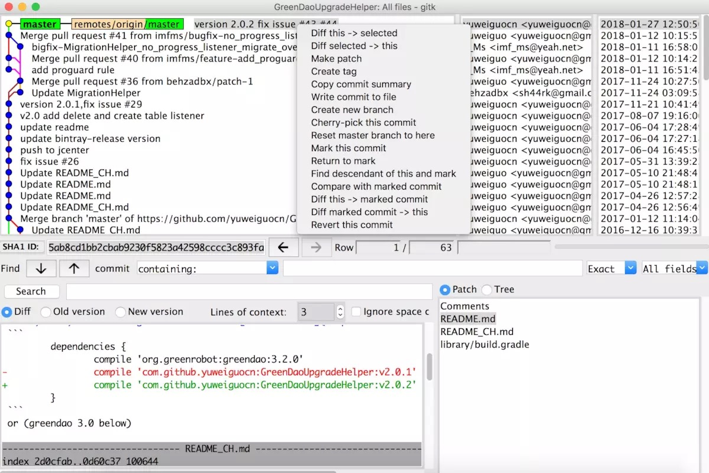
通过右键我们可以执行一些简单的操作，包括基于当前提交创建 tag，创建分支，reset 到当前提交、revert 当前提交等。
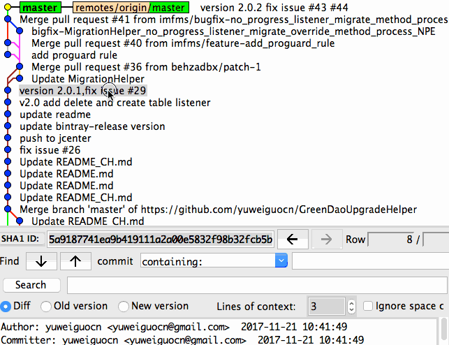
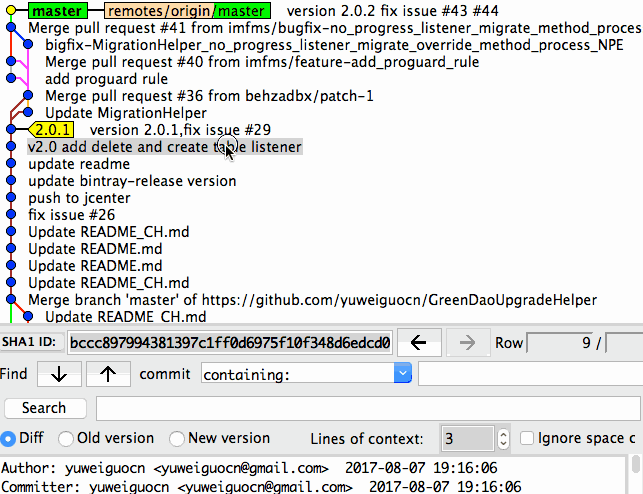
如果你安装了 git 工具，但无法使用 gitk 命令，更新 git 版本即可。
1 | brew update |
gitk --follow <filename>
当然我一般的用法是，当合并代码时，某些文件发生了冲突，查询该文件的提交信息：
1 | gitk --follow [filename] |
可以清楚的显示其相关所有信息。
git error Or fatal
git branch --set-upstream-to=origin/remote_branch your_branch
新建本地者分支后，拉取远程仓库，使用 git pull 的时候会报这样的错：
1 | There is no tracking information for the current branch. |
这是因为，我们新建的本地分支，并没有相关的跟踪信息，解决方法根据报错信息给的提示：
1 | git branch --set-upstream-to=origin/remote_branch your_branch |
其中，origin/remote_branch 是你本地分支对应的远程分支；your_branch 是你当前的本地分支。
git remote add origin <url>
新建本地仓库后，推送本地仓库到远程仓库，使用 git push 的时候会报这样的错：
1 | fatal: No configured push destination. |
同样的本地仓库并没有关联到远程仓库，解决方法根据报错信息给的提示：
1 | git remote add origin <url> |
其中 url 就是你远程仓库的地址，可以是 https：git remote add origin https://github.com/V-Vincen/jsDeliver.git，
也可以是 ssh：git@github.com:V-Vincen/jsDeliver.git。
allow-unrelated-histories、rebase origin master
创建本地仓库，拉取远程仓库或推送本地仓库到远程仓库，git pull 或者 git push 的时候回报这样的错：
1 | error: src refspec master does not match any |
这时候的本地仓库和远程仓库已经有关联的，但是本地仓库和远程仓库的代码不一致或者说两库之间的映射不匹配，解决方法有两种：
1 | git pull origin master --allow-unrelated-histories |
allow-unrelated-histories：可以理解为，允许本地和远程之间没有相关联的历史记录。
或者
1 | git pull --rebase origin master |
rebase origin master：重新设定远程 master。
git merge master --allow-unrelated-histories
两个分支合并的时候，出现了下面的这个错误：
1 | fatal: refusing to merge unrelated histories |
同上类似，因为两个分支没有取得关系，解决方法：
1 | git merge master --allow-unrelated-histories |
参考：https://www.jianshu.com/p/c2ec5f06cf1a
参考：http://www.360doc.com/content/17/0215/15/17572791_629200351.shtml
参考：https://www.jianshu.com/p/14afc9916dcb
If you like this blog or find it useful for you, you are welcome to comment on it. You are also welcome to share this blog, so that more people can participate in it. If the images used in the blog infringe your copyright, please contact the author to delete them. Thank you !